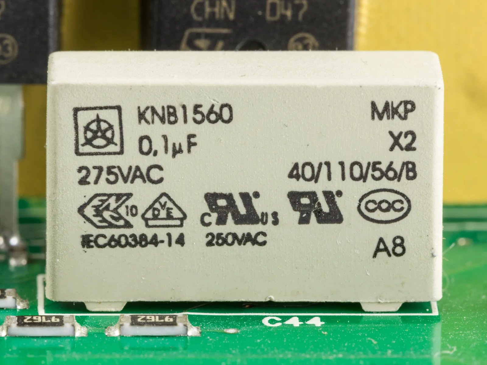
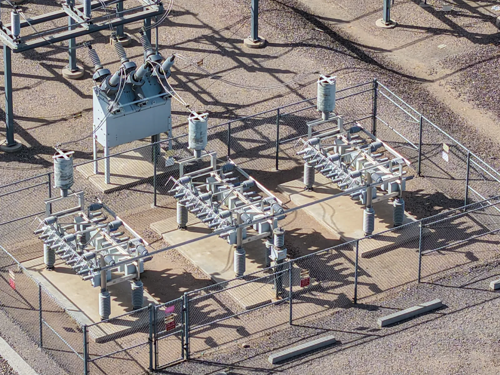

Kondensaattori ja sen energia
Miksi kameran salamavalo tarvitsee muutaman sekunnin latautumisajan, vaikka itse välähdys kestää vain millisekunnin?
Pohjatiedot
- Levyjen välisen homogeenisen sähkökentän voimakkuus on $E = \tfrac{U}{d}$luku Homogeeninen sähkökenttä
- Kun varaus $Q$ siirtyy jännitteen $U$ yli, sen energia muuttuu määrällä $QU$luku Potentiaalienergia ja potentiaali sähkökentässä
- Sähkövirta on varauksen siirtymistä, ja teho on energia aikayksikköä kohtiluku Sähköteho ja vastuksen lämpeneminen
Ydinpolku: etene vaiheiden mukaan. Ydinpolkuun kuuluvat laskujen lisäksi tutkimukset, selitykset ja kuvaajat. Valinnainen-merkityt tehtävät tarjoavat lisäharjoittelua. Valinnaisia tehtäviä 4.
Pohdinta
Kamerassa on kaksi tavallista AA-paristoa. Kun salamakuva on otettu, kamera ilmoittaa muutaman sekunnin ajan, että salama latautuu. Itse välähdys kestää noin millisekunnin, ja se on niin kirkas, että se valaisee koko huoneen. Paristot eivät pystyisi antamaan sellaista tehoa suoraan.
Mihin energia salamaa varten kerätään, ja miksi kerääminen kestää sekunteja mutta vapautuminen vain millisekunnin?
Valinnainen Kertaa: kenttä levyjen välissä
Ennusta
Tee ennusteet ennen tutkimista 2 kysymystä
Ennuste 1: jännite kaksinkertaiseksi
Ennuste 2: eriste irrotettuun kondensaattoriin
Tutki
Simulaatio
Käyttöohje
Levyjen etäisyys $d$, levyn pinta-ala $A$ ja lähteen jännite $U_0$ asetetaan liukusäätimillä, eriste ja lähde valikoista. Kun lähde on kytketty, kondensaattorin jännite on lähteen jännite. Kun valitset irrotettu, kytkin aukeaa ja levyjen varaus pysyy samana kuin se oli irrotushetkellä; lähteen jännitteen säädin ei silloin vaikuta. Punaiset ympyrät ovat positiivisia ja siniset negatiivisia varauksia, ja niiden määrä kuvaa varausta pinta-alaa kohti. Vihreiden kenttäviivojen tiheys kuvaa kentän voimakkuutta. Kuvaajan suora on $U = \tfrac{Q}{C}$, ja oranssin kolmion pinta-ala on energia. Kipinä levyjen välissä tarkoittaa läpilyöntiä.
Mallin oletukset
Levyt ovat yhdensuuntaiset, ja niiden etäisyys on pieni levyjen kokoon verrattuna, joten kenttä on homogeeninen ja reunojen vaikutus jätetään huomiotta. Eriste täyttää levyjen välin kokonaan. Eristeiden suhteelliset permittiivisyydet ja läpilyöntilujuudet ovat pyöristettyjä taulukkoarvoja: ilma $1{,}0$ ja $3\,\text{MV/m}$, teflon $2{,}1$ ja $60\,\text{MV/m}$, paperi $3{,}7$ ja $16\,\text{MV/m}$, lasi $5{,}6$ ja $14\,\text{MV/m}$. Lataus ja purkautuminen tapahtuvat mallissa heti, joten kuva näyttää aina lopputilan. Irrotettu kondensaattori ei vuoda, mutta läpilyönnissä se purkautuu. Luvut ovat mallin laskemia arvoja, eivät mittauksia.
Laskennan selitys
Kapasitanssi lasketaan levykondensaattorin kaavasta
$$C = \frac{\varepsilon_0 \varepsilon_\text{r} A}{d}$$
kun $\varepsilon_0 = 8{,}854 \cdot 10^{-12}\,\text{F/m}$. Kun lähde on kytketty, $U = U_0$ ja $Q = C U_0$. Irrotushetkellä varaus jää talteen, ja sen jälkeen jännite on $U = \tfrac{Q}{C}$. Kenttä on $E = \tfrac{U}{d}$, ja energia on $W = \tfrac{1}{2} Q U$. Läpilyönti tapahtuu, kun $E$ ylittää eristeen läpilyöntilujuuden $E_\text{max}$. Yksiköt sopivat yhteen: $\text{pF} \cdot \text{kV} = \text{nC}$, $\text{nC} \cdot \text{kV} = \mu\text{J}$ ja $\text{kV} : \text{mm} = \text{MV/m}$.
Muuta levyjen etäisyyttä ja pinta-alaa, lähteen jännitettä ja eristettä. Irrota lähde ja katso, mikä pysyy samana.
Koe 1: varaus ja energia jännitteen funktiona
Testaa ennuste 1. Lähde on kytketty, ja levyjen etäisyys, pinta-ala ja eriste pysyvät vakioina; muuta vain lähteen jännitettä. Kirjaa varaus ja energia ainakin kolmella jännitteellä, esimerkiksi $0{,}5$, $1{,}0$, $1{,}5$ ja $2{,}0\,\text{kV}$. Laske jokaiselta riviltä myös $Q : U$. Mitä huomaat?
Alkutila: levyn pinta-ala = $200\,\text{cm}^2$, levyjen etäisyys = $2\,\text{mm}$, eriste: ilma, lähde: kytketty, lähteen jännite = $0{,}5\,\text{kV}$. Vakiona: levyn pinta-ala, levyjen etäisyys, eriste, lähde. Muutetaan: lähteen jännite.
| lähteen jännite | $Q$ $(\text{nC})$ | $W$ $(\mu\text{J})$ |
|---|
Lisää tutkittavaa 5 tehtävää
Koe 2: levyjen etäisyys
Lähde on kytketty, ja sen jännite on $1{,}0\,\text{kV}$. Pinta-ala ja eriste pysyvät vakioina; muuta vain levyjen etäisyyttä. Kirjaa kapasitanssi, varaus ja kentän voimakkuus ainakin kolmella etäisyydellä, esimerkiksi $1{,}0$, $2{,}0$, $4{,}0$ ja $8{,}0\,\text{mm}$. Miten kapasitanssi riippuu etäisyydestä?
Alkutila: levyn pinta-ala = $200\,\text{cm}^2$, eriste: ilma, lähde: kytketty, lähteen jännite = $1\,\text{kV}$, levyjen etäisyys = $1\,\text{mm}$. Vakiona: levyn pinta-ala, eriste, lähde, lähteen jännite. Muutetaan: levyjen etäisyys.
| levyjen etäisyys | $C$ $(\text{pF})$ | $Q$ $(\text{nC})$ | $E$ $(\text{MV/m})$ |
|---|
Koe 3: eriste irrotettuun kondensaattoriin
Testaa ennuste 2. Kondensaattori ladataan ilmaeristeisenä $1{,}0\,\text{kV}$:iin, ja lähde irrotetaan. Etäisyys ja pinta-ala pysyvät vakioina; vaihda vain eristettä. Kirjaa varaus, jännite ja energia ainakin kahdella eristeellä. Mikä pysyy samana, ja mikä muuttuu?
Alkutila: levyn pinta-ala = $200\,\text{cm}^2$, levyjen etäisyys = $2\,\text{mm}$, lähteen jännite = $1\,\text{kV}$, eriste: ilma, lähde: irrotettu. Vakiona: levyn pinta-ala, levyjen etäisyys, lähteen jännite, lähde. Muutetaan: eriste.
| eriste | $Q$ $(\text{nC})$ | $U$ $(\text{kV})$ | $W$ $(\mu\text{J})$ |
|---|
Valinnainen Koe 4: eriste, kun lähde on kytketty
Toista koe 3 niin, että lähde pysyy kytkettynä $1{,}0\,\text{kV}$:n jännitteeseen. Vaihda vain eristettä, ja kirjaa varaus, jännite ja energia. Vertaa tuloksia kokeeseen 3: mikä nyt pysyy samana?
Alkutila: levyn pinta-ala = $200\,\text{cm}^2$, levyjen etäisyys = $2\,\text{mm}$, lähteen jännite = $1\,\text{kV}$, eriste: ilma, lähde: kytketty. Vakiona: levyn pinta-ala, levyjen etäisyys, lähteen jännite, lähde. Muutetaan: eriste.
| eriste | $Q$ $(\text{nC})$ | $U$ $(\text{kV})$ | $W$ $(\mu\text{J})$ |
|---|
Koe 5: läpilyönti ilmassa
Levyjen välissä on ilmaa $1{,}0\,\text{mm}$:n matkalla, ja lähde on kytketty. Nosta lähteen jännitettä vähitellen ja kirjaa kentän voimakkuus. Millä jännitteellä läpilyönti tapahtuu, ja mikä on silloin kentän voimakkuus?
Alkutila: levyn pinta-ala = $200\,\text{cm}^2$, levyjen etäisyys = $1\,\text{mm}$, eriste: ilma, lähde: kytketty, lähteen jännite = $2\,\text{kV}$. Vakiona: levyn pinta-ala, levyjen etäisyys, eriste, lähde. Muutetaan: lähteen jännite.
| lähteen jännite | $E$ $(\text{MV/m})$ | läpilyönti (1 = kyllä) |
|---|
Johtopäätös: mikä määrää varauksen ja energian?
Kirjoita taulukoidesi perusteella: miten varaus ja energia riippuivat jännitteestä, ja miten kapasitanssi riippui levyjen etäisyydestä? Mitä tapahtui varaukselle, jännitteelle ja energialle, kun eriste lisättiin irrotettuun kondensaattoriin?
Mallivastaus
Kokeessa 1 varaus kasvoi samassa suhteessa kuin jännite: $Q : U$ oli joka rivillä noin $88{,}5\,\text{nC/kV}$ eli kapasitanssi $88{,}5\,\text{pF}$. Energia kasvoi jännitteen neliön mukaan: kaksinkertainen jännite antoi nelinkertaisen energian, koska $W = \tfrac{1}{2} Q U$ ja sekä $Q$ että $U$ kaksinkertaistuivat. Kokeessa 2 kapasitanssi puolittui, kun etäisyys kaksinkertaistui, joten kapasitanssi on kääntäen verrannollinen etäisyyteen. Kokeessa 3 varaus pysyi $88{,}5\,\text{nC}$:ssa, koska irrotetun kondensaattorin varaus ei voi muuttua. Eriste kasvatti kapasitanssia, joten jännite ja energia pienenivät: lasin kanssa jännite oli noin $0{,}18\,\text{kV}$ ja energia noin $7{,}9\,\mu\text{J}$. Arvot ovat mallin laskemia.
Arvioi oma vastauksesi
Rastita kohdat, jotka omassa vastauksessasi jo on.
Kertaa asia teoriasta ja harjoittele tehtävillä.
Teoria
Ydinajatus
Kaksi johdelevyä ja niiden välissä eriste
Kondensaattori on kaksi johdekappaletta, esimerkiksi metallilevyä, joiden välissä on eriste. Kun kondensaattori kytketään jännitelähteeseen, lähde siirtää elektroneja johtimia pitkin levystä toiseen. Lähteen plusnapaan kytketystä levystä elektroneja poistuu, joten se varautuu positiivisesti, ja miinusnapaan kytkettyyn levyyn elektroneja tulee yhtä paljon lisää. Levyjen varaukset ovat siksi $+Q$ ja $-Q$, ja kondensaattori on kokonaisuutena sähköisesti neutraali. Kondensaattorin varauksella $Q$ tarkoitetaan toisen levyn varauksen suuruutta. Varaukset eivät kulje eristeen läpi levystä toiseen.
Varattujen levyjen välissä on homogeeninen sähkökenttä, joka osoittaa positiivisesta levystä negatiiviseen. Sen voimakkuus on $E = \tfrac{U}{d}$, missä $U$ on levyjen välinen jännite ja $d$ levyjen etäisyys (luku Homogeeninen sähkökenttä).
Lataus ja purkautuminen
Kun kondensaattoria ladataan vastuksen kautta, latauksen alussa levyt ovat varauksettomia ja kondensaattorin jännite $U_C$ on nolla. Koko lähteen jännite on silloin vastuksen yli, ja virta on suurin. Kun levyille kertyy varausta, kondensaattorin jännite kasvaa, vastuksen jännite pienenee ja virta pienenee. Lataus päättyy, kun kondensaattorin jännite on yhtä suuri kuin lähteen jännite $U_0$: silloin virtaa ei enää kulje.
Kun ladattu kondensaattori kytketään esimerkiksi lamppuun, se toimii jännitelähteenä ja purkautuu. Virta on suurin heti alussa ja kulkee vastakkaiseen suuntaan kuin latauksessa. Kun varaus pienenee, jännite ja virta pienenevät vähitellen nollaan. Mitä suurempi resistanssi piirissä on, sitä hitaammin lataus ja purkautuminen tapahtuvat.

Kapasitanssi kertoo, kuinka paljon varausta jännite tuo
Kun kondensaattorin jännite kaksinkertaistuu, kenttä levyjen välissä kaksinkertaistuu, ja siihen tarvitaan kaksinkertainen varaus. Varaus on siis suoraan verrannollinen jännitteeseen. Niiden suhde on kondensaattorin kapasitanssi, joka riippuu vain kondensaattorin rakenteesta: levyjen pinta-alasta $A$, niiden etäisyydestä $d$ ja eristeestä. Suuremmille levyille mahtuu enemmän varausta samalla kentällä. Kun levyt ovat lähempänä toisiaan, sama jännite tuottaa voimakkaamman kentän $E = \tfrac{U}{d}$, ja voimakkaampi kenttä vaatii levyille enemmän varausta. Kapasitanssi ei riipu jännitteestä eikä varauksesta.
Eriste kasvattaa kapasitanssia
Eristeessä varaukset eivät pääse liikkumaan vapaasti, mutta sähkökenttä siirtää molekyylien elektroneja hieman kohti positiivista levyä. Eriste polarisoituu: sen positiivista levyä vasten olevalle pinnalle tulee negatiivista ja vastakkaiselle pinnalle positiivista varausta. Nämä varaukset heikentävät levyjen kenttää. Kun levyillä on sama varaus, eristeen sisällä kenttä on heikompi kuin ilmassa, joten myös jännite on pienempi. Kapasitanssi on silloin suurempi.
Energia on sähkökentässä
Varauksen siirtäminen levystä toiseen vaatii työtä, koska positiivinen levy vetää elektroneja puoleensa ja negatiivinen levy hylkii niitä. Tämä työ varastoituu levyjen väliseen sähkökenttään energiaksi, ja purkautuessaan kondensaattori luovuttaa energian takaisin. Salamalaitteen paristot jaksavat antaa vain pientä tehoa, joten kondensaattorin lataaminen kestää sekunteja. Salamaputken läpi kondensaattori purkautuu millisekunnissa, ja sama energia vapautuu tuhansia kertoja suuremmalla teholla.

Läpilyöntilujuus
Jokainen eriste kestää vain tietyn suuruisen sähkökentän. Kun kenttä ylittää eristeen läpilyöntilujuuden $E_\text{max}$, eristeen molekyyleistä irtoaa elektroneja, eriste alkaa johtaa ja levyjen välillä purkautuu kipinä. Kondensaattori voi silloin vaurioitua pysyvästi. Siksi jokaiseen kondensaattoriin on merkitty suurin sallittu jännite. Ilman läpilyöntilujuus on noin $3\,\text{MV/m}$, ja salama on ilman läpilyönti suuressa mittakaavassa.
Suuri kondensaattori voi säilyttää vaarallisen jännitteen pitkään sen jälkeen, kun laite on irrotettu sähköverkosta. Esimerkiksi mikroaaltouunin ja salamalaitteen kondensaattorit voivat antaa sähköiskun, joten avattua laitetta ei kosketa ennen kuin kondensaattorit on purettu.
Kapasitanssi ja kondensaattorin energia
Kondensaattorin kapasitanssi on varauksen ja jännitteen suhde:
$$C = \frac{Q}{U}$$
missä $C$ on kapasitanssi ($\text{F}$), $Q$ kondensaattorin varaus ($\text{C}$) ja $U$ levyjen välinen jännite ($\text{V}$).
Kapasitanssin yksikkö on faradi, $1\,\text{F} = 1\,\tfrac{\text{C}}{\text{V}}$. Faradi on suuri yksikkö, joten tavallisten kondensaattorien kapasitanssit ilmoitetaan mikro-, nano- tai pikofaradeina, esimerkiksi $470\,\mu\text{F} = 470 \cdot 10^{-6}\,\text{F}$.
Levykondensaattori
Levykondensaattorin kapasitanssi on
$$C = \frac{\varepsilon_0 \varepsilon_\text{r} A}{d}$$
missä $A$ on levyn pinta-ala ($\text{m}^2$), $d$ levyjen etäisyys ($\text{m}$), $\varepsilon_0 = 8{,}854 \cdot 10^{-12}\,\text{F/m}$ sähkövakio eli tyhjiön permittiivisyys ja $\varepsilon_\text{r}$ eristeen suhteellinen permittiivisyys. Kaava pätee, kun levyjen etäisyys on pieni levyjen kokoon verrattuna (kenttä on homogeeninen eikä reunoja huomioida) ja eriste täyttää levyjen välin. Suhteellinen permittiivisyys kertoo, kuinka moninkertaiseksi eriste kasvattaa kapasitanssia tyhjiöön verrattuna. Ilmalle $\varepsilon_\text{r} \approx 1{,}0$.
| Eriste | $\varepsilon_\text{r}$ | $E_\text{max}\ (\text{MV/m})$ |
|---|---|---|
| ilma | $1{,}0$ | $3$ |
| teflon | $2{,}1$ | $60$ |
| paperi | $3{,}7$ | $16$ |
| lasi | $5{,}6$ | $14$ |
Taulukon arvot ovat likimääräisiä: ne riippuvat aineen laadusta, kosteudesta ja lämpötilasta.
Suurin sallittu jännite
Levyjen välinen kenttä on $E = \tfrac{U}{d}$, joten eriste kestää jännitteen
$$U_\text{max} = E_\text{max} d$$
missä $U_\text{max}$ on suurin jännite ($\text{V}$), jolla läpilyöntiä ei tapahdu, $E_\text{max}$ eristeen läpilyöntilujuus ($\text{V/m}$) ja $d$ eristekerroksen paksuus ($\text{m}$). Esimerkiksi $0{,}010\,\text{mm}$:n paperikerros kestää noin $16 \cdot 10^{6}\,\tfrac{\text{V}}{\text{m}} \cdot 0{,}010 \cdot 10^{-3}\,\text{m} = 160\,\text{V}$.
Kondensaattorin energia
Ladattaessa varaus kasvaa nollasta arvoon $Q$, ja jännite kasvaa samassa suhteessa nollasta arvoon $U$. Kun pieni varaus siirretään levystä toiseen jännitteen yli, se saa energian, joka on varaus kertaa senhetkinen jännite (luku Potentiaalienergia ja potentiaali sähkökentässä). Ensimmäiset varaukset siirtyvät pienen jännitteen yli ja viimeiset koko jännitteen $U$ yli, joten keskimääräinen jännite on $\tfrac{U}{2}$. Energia on $(Q, U)$-kuvaajan alle jäävän kolmion pinta-ala.
Kondensaattoriin varastoitunut energia on
$$W = \tfrac{1}{2} Q U = \tfrac{1}{2} C U^2$$
missä $W$ on energia ($\text{J}$), $Q$ varaus ($\text{C}$), $U$ jännite ($\text{V}$) ja $C$ kapasitanssi ($\text{F}$). Jälkimmäinen muoto saadaan sijoittamalla $Q = CU$. Energiaa merkitään $W$:llä, koska $E$ tarkoittaa tässä luvussa sähkökentän voimakkuutta. Myös luvussa Akut ja latauspiiri energia oli $W$, koska $E$ oli siellä lähdejännite.
Kun aluksi varaamaton kondensaattori ladataan vakiojännitelähteestä tavallisessa latauspiirissä, jossa on resistanssia, lähde siirtää koko varauksen $Q$ täyden jännitteensä $U$ yli, joten se antaa energian $QU$. Kondensaattoriin varastoituu siitä vain puolet. Toinen puoli muuttuu latauksen aikana johtimien ja vastusten sisäenergiaksi, joka siirtyy lämpönä ympäristöön. Puolet ei ole yleinen laki kaikille lataustavoille: se on tämän mallin tulos.
Eriste, kun lähde on kytkettynä tai irrotettuna
Kun levyjen väliin työnnetään eristelevy, joka täyttää välin, kapasitanssi kasvaa $\varepsilon_\text{r}$-kertaiseksi. Muut suureet muuttuvat sen mukaan, pysyykö kondensaattori kytkettynä lähteeseen.
| Lähde kytkettynä | Lähde irrotettuna | |
|---|---|---|
| $U$ | sama | pienenee |
| $Q$ | kasvaa | sama |
| $W$ | kasvaa | pienenee |
Kun lähde on kytkettynä, jännite pysyy samana ja lähde tuo levyille lisää varausta, joten $Q = CU$ ja $W = \tfrac{1}{2} C U^2$ kasvavat. Irrotetun kondensaattorin varaus ei voi muuttua, joten jännite $U = \tfrac{Q}{C}$ ja energia $W = \tfrac{1}{2} Q U$ pienenevät: kenttä vetää eristelevyä levyjen väliin ja tekee työtä.
Yleinen virhekäsitys
Moni ajattelee, että ladattu kondensaattori on kokonaisuutena sähköisesti varattu, samaan tapaan kuin akku olisi täynnä varausta. Ladatun kondensaattorin levyillä on kuitenkin yhtä suuret vastakkaismerkkiset varaukset $+Q$ ja $-Q$, sillä latauksessa lähde vain siirtää varausta levystä toiseen. Kondensaattorin kokonaisvaraus on nolla, mutta siihen on varastoitunut energiaa levyjen väliseen sähkökenttään.
Toinen virhe on ajatella, että virta kulkee kondensaattorin läpi. Levyjen välissä on eriste, eikä varaus kulje sen läpi. Virta kulkee johtimissa vain latauksen ja purkautumisen aikana, kun varaus siirtyy levyille tai niiltä pois. Kolmas virhe on ajatella, että kapasitanssi kasvaa jännitteen kasvaessa. Suurempi jännite tuo suuremman varauksen, mutta niiden suhde $C$ riippuu vain kondensaattorin rakenteesta.
Tiivistelmä
- Kondensaattorissa on kaksi johdelevyä, joiden välissä on eriste. Ladattaessa levyjen varaukset ovat $+Q$ ja $-Q$, ja levyjen välissä on homogeeninen kenttä $E = \tfrac{U}{d}$.
- Latauksessa ja purkautumisessa virta on suurin alussa ja pienenee vähitellen nollaan, ja kondensaattorin jännite muuttuu yhä hitaammin.
- Kapasitanssi on $C = \tfrac{Q}{U}$, yksikkö faradi. Levykondensaattorille $C = \tfrac{\varepsilon_0 \varepsilon_\text{r} A}{d}$: suuret levyt, pieni etäisyys ja eriste kasvattavat kapasitanssia.
- Kondensaattorin energia on $W = \tfrac{1}{2} Q U = \tfrac{1}{2} C U^2$, ja se on levyjen välisessä sähkökentässä.
- Eriste kestää kentän, joka on enintään sen läpilyöntilujuus $E_\text{max}$, joten suurin sallittu jännite on $U_\text{max} = E_\text{max} d$. Suuri kondensaattori voi olla vaarallinen myös irrotetussa laitteessa.
Valinnainen Palaa ennusteisiisi
Vertaa ennusteitasi kokeiden mallin arvoihin ja kaavaan $W = \tfrac{1}{2} Q U$. Palaa sitten alun kysymykseen: mihin salaman energia kerätään, ja miksi se vapautuu niin paljon nopeammin kuin se kerätään?
Muuttaisitko ennustettasi?
Esimerkit
Kun olet opiskellut luvun teorian, siirry ohjattuihin esimerkkeihin. Ensimmäisessä seuraat mallilaskua vaihe vaiheelta, seuraavissa teet valinnat itse, ja vihjeet auttavat, jos jäät jumiin.
Esimerkki 1: Kameran salaman kondensaattori
Kameran salamalaitteen kondensaattorin kapasitanssi on $150\,\mu\text{F}$, ja se ladataan jännitteeseen $300\,\text{V}$. Välähdyksessä kondensaattori purkautuu salamaputken läpi $1{,}0\,\text{ms}$:ssa. Kuinka paljon energiaa kondensaattoriin varastoituu, ja kuinka suuri on keskimääräinen teho välähdyksen aikana?
Vaihe 1/7
Tunnetut ja kysytty. $C = 150\,\mu\text{F}$, $U = 300\,\text{V}$ ja purkautumisaika $t = 1{,}0\,\text{ms}$. Kysytään energiaa $W$ ja keskimääräistä tehoa $P$.
Vaihe 2/7
Periaate. Kondensaattorin energia saadaan kapasitanssista ja jännitteestä. Välähdyksessä kondensaattori purkautuu, joten sama energia vapautuu purkautumisajan kuluessa, ja keskimääräinen teho on energia jaettuna ajalla.
Vaihe 3/7
Kaava ratkaistuna. $$\begin{aligned} W &= \tfrac{1}{2} C U^2 \\ P &= \frac{W}{t} \end{aligned}$$
Vaihe 4/7
Yksikkömuunnokset.
Vaihe 5/7
Sijoitus. $$\begin{aligned} W &= \tfrac{1}{2} C U^2 \\ \phantom{W} &= \tfrac{1}{2} \cdot 150 \cdot 10^{-6}\,\text{F} \cdot (300\,\text{V})^2 \\ \phantom{W} &= 6{,}75\,\text{J} \\ P &= \frac{W}{t} = \frac{6{,}75\,\text{J}}{1{,}0 \cdot 10^{-3}\,\text{s}} \\ \phantom{P} &= 6750\,\text{W} \end{aligned}$$
Vaihe 6/7
Tulos. Kondensaattoriin varastoituu noin $6{,}8\,\text{J}$, ja keskimääräinen teho välähdyksen aikana on noin $6{,}8\,\text{kW}$, kaksi merkitsevää numeroa. Energia $W$ saadaan kapasitanssista ja jännitteestä, ja teho $P$ jakamalla se purkautumisajalla $1{,}0\,\text{ms}$.
Vaihe 7/7
Järkevyys. Varaus on $Q = CU = 0{,}045\,\text{C}$, ja $\tfrac{1}{2} \cdot 0{,}045\,\text{C} \cdot 300\,\text{V} = 6{,}75\,\text{J}$, sama tulos. Jos paristot antavat lataukseen noin $2\,\text{W}$, lataus kestää vähintään $6{,}75\,\text{J} : 2\,\text{W} \approx 3{,}4\,\text{s}$, yli kolmetuhatta kertaa välähdystä kauemmin. Tämä vastaa alun kysymykseen.
Esimerkki 2: Etsi virhe
Esimerkki 3: Sovella uuteen tilanteeseen
Tyhjää kondensaattoria, jonka kapasitanssi on $4{,}7\,\mu\text{F}$, ladataan vastuksen kautta $9{,}0\,\text{V}$:n paristolla, kunnes virta lakkaa kulkemasta. Kuinka paljon energiaa muuttuu latauksen aikana vastuksen ja johtimien sisäenergiaksi? Vastaa mikrojouleina.
Vihje 1: ohjaava kysymys
Paljonko energiaa paristo antaa, kun koko varaus $Q$ siirtyy sen jännitteen $U$ yli? Paljonko siitä jää kondensaattoriin?
Vihje 2: mikä yhteys
Pariston antama energia on $QU = CU^2$, ja kondensaattoriin varastoituu $\tfrac{1}{2} C U^2$. Erotus muuttuu sisäenergiaksi.
Vihje 3: välivaihe
Varaus on
ja pariston energia $42{,}3\,\mu\text{C} \cdot 9{,}0\,\text{V}$.
Näytä ratkaisu
Annettu
kapasitanssi $C = 4{,}7\,\mu\text{F}$, pariston jännite $U = 9{,}0\,\text{V}$, kondensaattori aluksi tyhjä
Kysytty
sisäenergiaksi muuttuva energia $W_\text{s}$ mikrojouleina
Periaate
Energia säilyy. Paristo siirtää koko varauksen $Q$ jännitteensä $U$ yli, joten se antaa energian $QU$. Kondensaattoriin varastoituu $\tfrac{1}{2} Q U$, koska sen jännite kasvaa latauksen aikana nollasta $U$:hun. Loput muuttuvat vastuksen ja johtimien sisäenergiaksi.
Kaava
$Q = CU$ ja $W_\text{s} = QU - \tfrac{1}{2} Q U$, josta $W_\text{s} = \tfrac{1}{2} C U^2$
Muunnokset
Sijoitus
Vastaus
$190\,\mu\text{J}$
Eli $1{,}9 \cdot 10^{2}\,\mu\text{J}$, kaksi merkitsevää numeroa kuten kapasitanssissa ja jännitteessä.
Järkevyys
Paristo antaa $42{,}3\,\mu\text{C} \cdot 9{,}0\,\text{V} \approx 381\,\mu\text{J}$, ja kondensaattoriin jää $190\,\mu\text{J}$. Energiatase täsmää: $190\,\mu\text{J} + 190\,\mu\text{J} \approx 381\,\mu\text{J}$. Vastuksen suuruutta ei tarvittu: suurempi resistanssi hidastaa latausta, mutta sisäenergiaksi muuttuu silti puolet.
Tehtävät
Taso 1 · perusharjoitus 9 tehtävää
Yksi kaava tai yksi päättelyaskel. Ydintehtävät ensin, loput lisäharjoitusta.
- Tehtävä 13-1
Kondensaattori kytketään $12\,\text{V}$:n jännitteeseen, ja sen levyille siirtyy varaus $4{,}8\,\mu\text{C}$. Mikä on kondensaattorin kapasitanssi? Vastaa mikrofaradeina.
Vastaus
$0{,}40\,\mu\text{F}$
Näytä ratkaisu
Annettu
jännite $U = 12\,\text{V}$, varaus $Q = 4{,}8\,\mu\text{C}$
Kysytty
kapasitanssi $C$ mikrofaradeina
Periaate
Kondensaattorin varaus on suoraan verrannollinen sen jännitteeseen, ja niiden suhde on kapasitanssi. Kun lataus on päättynyt, kondensaattorin jännite on lähteen jännite.
Kaava
$C = \dfrac{Q}{U}$
Muunnokset
$Q$$= 4{,}8\,\mu\text{C}$$= 4{,}8 \cdot 10^{-6}\,\text{C}$Sijoitus
$C$$= \dfrac{4{,}8 \cdot 10^{-6}\,\text{C}}{12\,\text{V}}$$= 0{,}40 \cdot 10^{-6}\,\text{F}$$= 0{,}40\,\mu\text{F}$Vastaus
$0{,}40\,\mu\text{F}$
Kaksi merkitsevää numeroa kuten varauksessa ja jännitteessä.
Järkevyys
Kapasitanssin $0{,}40\,\mu\text{F}$ kondensaattoriin tulee $0{,}40\,\mu\text{C}$ jokaista volttia kohti, ja $12 \cdot 0{,}40\,\mu\text{C} = 4{,}8\,\mu\text{C}$. Kymmenesosamikrofaradeja on tavallinen kapasitanssi pienelle kondensaattorille.
- Tehtävä 13-2
Elektrolyyttikondensaattorin kapasitanssi on $470\,\mu\text{F}$, ja se ladataan $9{,}0\,\text{V}$:n paristolla. Kuinka suuri on kondensaattorin varaus latauksen jälkeen? Vastaa millicoulombeina.
Vastaus
$4{,}2\,\text{mC}$
Näytä ratkaisu
Annettu
kapasitanssi $C = 470\,\mu\text{F}$, jännite $U = 9{,}0\,\text{V}$
Kysytty
varaus $Q$ millicoulombeina
Periaate
Latauksen jälkeen kondensaattorin jännite on pariston jännite, ja varaus on kapasitanssi kertaa jännite, koska kapasitanssi on varauksen ja jännitteen suhde.
Kaava
$C = \dfrac{Q}{U}$, josta $Q = CU$
Muunnokset
$C$$= 470\,\mu\text{F}$$= 470 \cdot 10^{-6}\,\text{F}$Sijoitus
$Q$$= 470 \cdot 10^{-6}\,\text{F} \cdot 9{,}0\,\text{V}$$= 4{,}23 \cdot 10^{-3}\,\text{C}$$= 4{,}23\,\text{mC}$Vastaus
$4{,}2\,\text{mC}$
Kaksi merkitsevää numeroa kuten jännitteessä $9{,}0\,\text{V}$.
Järkevyys
Arvio
$500\,\mu\text{F} \cdot 10\,\text{V}$$= 5000\,\mu\text{C}$$= 5\,\text{mC}$on hieman suurempi, koska molemmat luvut pyöristettiin ylöspäin. Yksikkö täsmää:
$\text{F} \cdot \text{V}$$= \tfrac{\text{C}}{\text{V}} \cdot \text{V}$$= \text{C}$ - Tehtävä 13-3
Kaiutinvahvistimen virtalähteessä on kondensaattori, jonka kapasitanssi on $2200\,\mu\text{F}$ ja jännite $16\,\text{V}$. Kuinka paljon energiaa kondensaattoriin on varastoitunut? Vastaa jouleina.
Vastaus
$0{,}28\,\text{J}$
Näytä ratkaisu
Annettu
kapasitanssi $C = 2200\,\mu\text{F}$, jännite $U = 16\,\text{V}$
Kysytty
varastoitunut energia $W$ jouleina
Periaate
Ladatun kondensaattorin energia on levyjen välisessä sähkökentässä. Kun kapasitanssi ja jännite tunnetaan, energia saadaan muodosta $\tfrac{1}{2} C U^2$, joka seuraa $(Q, U)$-kuvaajan kolmion pinta-alasta.
Kaava
$W = \tfrac{1}{2} C U^2$
Muunnokset
$C$$= 2200\,\mu\text{F}$$= 2200 \cdot 10^{-6}\,\text{F}$Sijoitus
$W$$= \tfrac{1}{2} \cdot 2200 \cdot 10^{-6}\,\text{F} \cdot (16\,\text{V})^2$$= 0{,}2816\,\text{J}$Vastaus
$0{,}28\,\text{J}$
Kaksi merkitsevää numeroa kuten jännitteessä $16\,\text{V}$.
Järkevyys
Varaus on $Q = CU \approx 0{,}035\,\text{C}$, ja
$\tfrac{1}{2} \cdot 0{,}035\,\text{C} \cdot 16\,\text{V}$$\approx 0{,}28\,\text{J}$sama tulos. Alle joulen energia on pieni, mikä sopii pienjännitteiselle kondensaattorille.
- Tehtävä 13-4Ydintehtävä
Levykondensaattorin levyjen pinta-ala on $0{,}025\,\text{m}^2$, ja levyjen välissä on ilmaa $1{,}0\,\text{mm}$:n paksuudelta. Mikä on kondensaattorin kapasitanssi? Vastaa pikofaradeina.
Vastaus
$2{,}2 \cdot 10^{2}\,\text{pF} = 220\,\text{pF}$
Näytä ratkaisu
Annettu
levyn pinta-ala $A = 0{,}025\,\text{m}^2$, levyjen etäisyys $d = 1{,}0\,\text{mm}$, eristeenä ilma, taulukosta $\varepsilon_\text{r} = 1{,}0$, sähkövakio $\varepsilon_0 = 8{,}854 \cdot 10^{-12}\,\text{F/m}$
Kysytty
kapasitanssi $C$ pikofaradeina
Periaate
Kondensaattori on levykondensaattori, jonka kapasitanssi riippuu vain levyjen pinta-alasta, niiden etäisyydestä ja eristeestä. Ilman suhteellinen permittiivisyys on lähes yksi.
Kaava
$C$$= \dfrac{\varepsilon_0 \varepsilon_\text{r} A}{d}$josta ilmalle $C = \dfrac{\varepsilon_0 A}{d}$
Muunnokset
$d$$= 1{,}0\,\text{mm}$$= 1{,}0 \cdot 10^{-3}\,\text{m}$Sijoitus
$C$$= \dfrac{8{,}854 \cdot 10^{-12}\,\text{F/m} \cdot 0{,}025\,\text{m}^2}{1{,}0 \cdot 10^{-3}\,\text{m}}$$= 221 \cdot 10^{-12}\,\text{F}$$= 221\,\text{pF}$Vastaus
$2{,}2 \cdot 10^{2}\,\text{pF} = 220\,\text{pF}$
(laskettu arvo $221\,\text{pF}$ pyöristettynä kahteen merkitsevään numeroon kuten pinta-alassa ja etäisyydessä).
Järkevyys
Suhde
$A : d$$= 0{,}025\,\text{m}^2 : 0{,}0010\,\text{m}$$= 25\,\text{m}$ja $25\,\text{m} \cdot 8{,}854\,\text{pF/m} \approx 220\,\text{pF}$. Ilmaeristeisen levykondensaattorin kapasitanssi on tyypillisesti satoja pikofaradeja.
- Tehtävä 13-5
Kuvaajassa on kondensaattorin jännite sen varauksen funktiona latauksen aikana. Kuinka paljon energiaa kondensaattoriin on varastoitunut, kun sen jännite on $12\,\text{V}$? Lue tarvittavat arvot kuvaajasta. Vastaa mikrojouleina.
Vastaus
$360\,\mu\text{J}$
Näytä ratkaisu
Annettu
kuvaajan jännite varauksen funktiona, jännite $U = 12\,\text{V}$
Kysytty
varastoitunut energia $W$ mikrojouleina
Periaate
Latauksessa jännite kasvaa samassa suhteessa kuin varaus. Energia on kuvaajan ja varausakselin väliin jäävän kolmion pinta-ala eli puolet varauksen ja jännitteen tulosta.
Kuvaajan lukeminen
Jännitteen $12\,\text{V}$ ruudukkoviiva kohtaa suoran varauksen $60\,\mu\text{C}$ ruudukkoviivalla. Kolmion kanta on siis $60\,\mu\text{C}$ ja korkeus $12\,\text{V}$.
Kaava
$W = \tfrac{1}{2} Q U$
Muunnokset
Ei tarvita: $\mu\text{C} \cdot \text{V} = \mu\text{J}$, koska $1\,\text{C} \cdot 1\,\text{V} = 1\,\text{J}$.
Sijoitus
$W$$= \tfrac{1}{2} \cdot 60\,\mu\text{C} \cdot 12\,\text{V}$$= 360\,\mu\text{J}$Vastaus
$360\,\mu\text{J}$
Kaksi merkitsevää numeroa, koska arvot luetaan ruudukkoviivoilta, joiden väli on $10\,\mu\text{C}$ ja $2\,\text{V}$.
Järkevyys
Kapasitanssi on $60\,\mu\text{C} : 12\,\text{V} = 5{,}0\,\mu\text{F}$, ja
$\tfrac{1}{2} \cdot 5{,}0\,\mu\text{F} \cdot (12\,\text{V})^2$$= 360\,\mu\text{J}$sama tulos. Suorakulmion $60\,\mu\text{C} \cdot 12\,\text{V} = 720\,\mu\text{J}$ puolikas on kolmio, kuten pitää.
- Tehtävä 13-6
Kondensaattori ladataan ensin $5{,}0\,\text{V}$:n ja sitten $10\,\text{V}$:n jännitteeseen. Mitä kondensaattorin kapasitanssille tapahtuu?
Vastaus
Se pysyy samana, koska kapasitanssi määräytyy kondensaattorin rakenteesta.
Näytä ratkaisu
Kysytty
mitä kapasitanssille tapahtuu, kun jännite kaksinkertaistuu.
Periaate
Kapasitanssi on varauksen ja jännitteen suhde $C = \tfrac{Q}{U}$. Se määräytyy levyjen pinta-alasta, niiden etäisyydestä ja eristeestä, ei siitä, kuinka suureen jännitteeseen kondensaattori ladataan. Kun jännite kasvaa, varaus kasvaa samassa suhteessa.
Mallivastaus
Kapasitanssi pysyy samana, koska se määräytyy kondensaattorin rakenteesta. Jännitteellä $5{,}0\,\text{V}$ varaus on $Q_1 = 5{,}0\,\text{V} \cdot C$ ja jännitteellä $10\,\text{V}$ se on $Q_2 = 10\,\text{V} \cdot C$, joten varaus kaksinkertaistuu mutta suhde $\tfrac{Q}{U}$ ei muutu. Kapasitanssi ei kaksinkertaistu, pienene eikä nelinkertaistu. Energia sen sijaan nelinkertaistuu, koska $W = \tfrac{1}{2} C U^2$ riippuu jännitteen neliöstä.
- Tehtävä 13-7Ydintehtävä
Ladatun ilmaeristeisen levykondensaattorin lähde irrotetaan. Sen jälkeen levyjen väliin työnnetään eristelevy, joka täyttää koko välin. Mitä kondensaattorin jännitteelle tapahtuu?
Vastaus
Se pienenee, koska varaus pysyy samana ja kapasitanssi kasvaa.
Näytä ratkaisu
Kysytty
mitä jännitteelle tapahtuu, kun irrotettuun kondensaattoriin työnnetään eriste.
Periaate
Irrotetun kondensaattorin varaus ei voi muuttua, koska varauksella ei ole reittiä levyltä toiselle. Eriste kasvattaa kapasitanssin $\varepsilon_\text{r}$-kertaiseksi, ja jännite saadaan kaavasta $U = \tfrac{Q}{C}$.
Mallivastaus
Jännite pienenee. Varaus $Q$ pysyy samana, koska lähde on irrotettu, ja kapasitanssi $C$ kasvaa eristeen vuoksi. Koska $U = \tfrac{Q}{C}$, jännite pienenee samassa suhteessa kuin kapasitanssi kasvaa: se on $\tfrac{1}{\varepsilon_\text{r}}$-kertainen. Eriste ei johda varausta levyltä toiselle, ja jännite ei pysy samana, koska lähde ei enää pidä sitä vakiona. Myös energia $W = \tfrac{1}{2} Q U$ pienenee.
- Tehtävä 13-8
Tietokoneen virtalähteen kondensaattorin kapasitanssi on $1000\,\mu\text{F}$. Sen jännite nousee arvosta $6{,}0\,\text{V}$ arvoon $18\,\text{V}$. Kuinka paljon kondensaattorin energia kasvaa? Vastaa millijouleina.
Vastaus
$144\,\text{mJ}$
Näytä ratkaisu
Annettu
kapasitanssi $C = 1000\,\mu\text{F}$, jännite $U_1 = 6{,}0\,\text{V}$ ja $U_2 = 18\,\text{V}$
Kysytty
energian kasvu $\Delta W$ millijouleina
Periaate
Kondensaattorin energia on $\tfrac{1}{2} C U^2$ ja riippuu jännitteen neliöstä. Kapasitanssi ei muutu, joten energian kasvu on loppu- ja alkuenergian erotus.
Kaava
$W$$= \tfrac{1}{2} C U^2$$\Delta W$$= W_2 - W_1$$= \tfrac{1}{2} C (U_2^2 - U_1^2)$Muunnokset
$C$$= 1000\,\mu\text{F}$$= 1000 \cdot 10^{-6}\,\text{F}$$= 1{,}0 \cdot 10^{-3}\,\text{F}$Sijoitus
$W_1$$= \tfrac{1}{2} \cdot 1{,}0 \cdot 10^{-3}\,\text{F} \cdot (6{,}0\,\text{V})^2$$= 0{,}018\,\text{J}$$W_2$$= \tfrac{1}{2} \cdot 1{,}0 \cdot 10^{-3}\,\text{F} \cdot (18\,\text{V})^2$$= 0{,}162\,\text{J}$$\Delta W$$= 0{,}162\,\text{J} - 0{,}018\,\text{J}$$= 0{,}144\,\text{J}$$= 144\,\text{mJ}$Vastaus
$144\,\text{mJ}$
Kolme merkitsevää numeroa, koska kapasitanssi $1000\,\mu\text{F}$ ja jännite $18\,\text{V}$ määräävät tuloksen riittävän tarkasti.
Järkevyys
Jännite kolminkertaistuu, joten energia kasvaa $3^2 = 9$-kertaiseksi:
$W_2 : W_1$$= 162\,\text{mJ} : 18\,\text{mJ}$$= 9$Kasvu on
$9W_1 - W_1$$= 8W_1$$= 8 \cdot 18\,\text{mJ}$$= 144\,\text{mJ}$ - Tehtävä 13-9
Kondensaattori, jonka kapasitanssi on $100\,\mu\text{F}$, ladataan vastuksen kautta $12\,\text{V}$:n paristolla, kunnes virta lakkaa kulkemasta. Päättele, mitkä väitteet ovat tosia ja mitkä epätosia.
Vastaus
1 tosi, 2 epätosi, 3 epätosi, 4 epätosi, 5 tosi
Näytä ratkaisu
Kysytty
mitkä viidestä väitteestä ladatusta kondensaattorista ovat tosia.
Periaate
Latauksessa paristo siirtää varausta levystä toiseen, joten levyillä on varaukset $+Q$ ja $-Q$, ja $Q = CU$. Varaus ei kulje eristeen läpi, ja virta lakkaa, kun kondensaattorin jännite on pariston jännite. Kapasitanssi riippuu vain rakenteesta, ja energia on $W = \tfrac{1}{2} C U^2$.
Mallivastaus
Varaus on
$Q = CU$
$Q = 100 \cdot 10^{-6}\,\text{F} \cdot 12\,\text{V}$
$Q = 1{,}2 \cdot 10^{-3}\,\text{C} = 1{,}2\,\text{mC}$
ja energia
$W = \tfrac{1}{2} C U^2$
$W = \tfrac{1}{2} \cdot 100 \cdot 10^{-6}\,\text{F} \cdot (12\,\text{V})^2$
$W = 7{,}2 \cdot 10^{-3}\,\text{J} = 7{,}2\,\text{mJ}$
1 tosi: levyjen varaukset ovat $+1{,}2\,\text{mC}$ ja $-1{,}2\,\text{mC}$, ja niiden summa on nolla.
2 epätosi: eriste ei johda sähköä, joten varaus ei kulje sen läpi. Virta kulkee johtimissa vain latauksen aikana; kun virta on lakannut, levyjen varaus ei enää muutu.
3 epätosi: kaksinkertainen jännite tuo kaksinkertaisen varauksen, joten $C = \tfrac{Q}{U}$ on yhä $100\,\mu\text{F}$.
4 epätosi: $14{,}4\,\text{mJ}$ on $QU$ eli pariston antama energia. Kondensaattoriin varastoituu siitä puolet, $7{,}2\,\text{mJ}$, ja toinen puoli muuttuu vastuksen sisäenergiaksi.
5 tosi: kun $C$ pysyy samana, energia on verrannollinen jännitteen neliöön. Jännitteellä $24\,\text{V}$ se on $4 \cdot 7{,}2\,\text{mJ} = 28{,}8\,\text{mJ}$.
Taso 2 · soveltava harjoitus 7 tehtävää
Kaksi vaihetta, mittausaineiston käsittely, yksikkömuunnos tai kaavan ratkaiseminen. Ydintehtävät ensin, loput lisäharjoitusta.
- Tehtävä 13-10Ydintehtävä
Kondensaattorin levyjen välissä on $0{,}020\,\text{mm}$:n paksuinen paperikerros, jonka läpilyöntilujuus on $16\,\text{MV/m}$. Kuinka suuri jännite kondensaattoriin voidaan enintään kytkeä ilman läpilyöntiä?
Vastaus
$320\,\text{V}$
Näytä ratkaisu
Annettu
paperikerroksen paksuus $d = 0{,}020\,\text{mm}$, läpilyöntilujuus $E_\text{max} = 16\,\text{MV/m}$
Kysytty
suurin jännite $U_\text{max}$ voltteina
Periaate
Levyjen välissä on homogeeninen kenttä $E = \tfrac{U}{d}$. Läpilyönti tapahtuu, kun kenttä ylittää eristeen läpilyöntilujuuden, joten suurin sallittu jännite saadaan, kun kenttä on täsmälleen läpilyöntilujuus.
Kaava
$E_\text{max}$$= \dfrac{U_\text{max}}{d}$josta $U_\text{max} = E_\text{max} d$
Muunnokset
$E_\text{max}$$= 16\,\text{MV/m}$$= 16 \cdot 10^{6}\,\text{V/m}$$d$$= 0{,}020\,\text{mm}$$= 0{,}020 \cdot 10^{-3}\,\text{m}$Sijoitus
$U_\text{max}$$= 16 \cdot 10^{6}\,\tfrac{\text{V}}{\text{m}} \cdot 0{,}020 \cdot 10^{-3}\,\text{m}$$= 320\,\text{V}$Vastaus
$320\,\text{V}$
Eli $3{,}2 \cdot 10^{2}\,\text{V}$, kaksi merkitsevää numeroa kuten paksuudessa ja läpilyöntilujuudessa.
Järkevyys
Yksi millimetri paperia kestäisi $16\,\text{kV}$, ja $0{,}020\,\text{mm}$ on siitä viideskymmenesosa: $16\,000\,\text{V} : 50 = 320\,\text{V}$. Ohut eriste antaa suuren kapasitanssin, mutta kestää vain pienen jännitteen.
- Tehtävä 13-11
Levykondensaattorin levyjen pinta-ala on $100\,\text{cm}^2$, ja niiden välissä on $0{,}10\,\text{mm}$:n paksuinen eristekerros. Kondensaattorin kapasitanssiksi mitataan $3{,}3\,\text{nF}$. Mikä on eristeen suhteellinen permittiivisyys?
Vastaus
$3{,}7$
Näytä ratkaisu
Annettu
levyn pinta-ala $A = 100\,\text{cm}^2$, eristekerroksen paksuus $d = 0{,}10\,\text{mm}$, kapasitanssi $C = 3{,}3\,\text{nF}$, sähkövakio $\varepsilon_0 = 8{,}854 \cdot 10^{-12}\,\text{F/m}$
Kysytty
eristeen suhteellinen permittiivisyys $\varepsilon_\text{r}$
Periaate
Kondensaattori on levykondensaattori, ja eriste täyttää levyjen välin, joten sen kapasitanssi on $\varepsilon_\text{r}$-kertainen tyhjiöön verrattuna. Kun kapasitanssi ja mitat tunnetaan, suhteellinen permittiivisyys voidaan ratkaista.
Kaava
$C$$= \dfrac{\varepsilon_0 \varepsilon_\text{r} A}{d}$josta
$\varepsilon_\text{r}$$= \dfrac{C d}{\varepsilon_0 A}$Muunnokset
$A$$= 100\,\text{cm}^2$$= 100 \cdot (0{,}01\,\text{m})^2$$= 10^{-2}\,\text{m}^2$$d$$= 0{,}10\,\text{mm}$$= 0{,}10 \cdot 10^{-3}\,\text{m}$$= 10^{-4}\,\text{m}$$C$$= 3{,}3\,\text{nF}$$= 3{,}3 \cdot 10^{-9}\,\text{F}$Sijoitus
$\varepsilon_\text{r}$$= \dfrac{3{,}3 \cdot 10^{-9}\,\text{F} \cdot 10^{-4}\,\text{m}}{8{,}854 \cdot 10^{-12}\,\text{F/m} \cdot 10^{-2}\,\text{m}^2}$$\approx 3{,}73$Vastaus
$3{,}7$
Kaksi merkitsevää numeroa kuten kapasitanssissa ja paksuudessa. Suhteellinen permittiivisyys on suhdeluku, jolla ei ole yksikköä.
Järkevyys
Ilmalla kapasitanssi olisi $\varepsilon_0 A : d \approx 0{,}89\,\text{nF}$, ja $3{,}3\,\text{nF}$ on siitä noin $3{,}7$-kertainen. Taulukon mukaan paperin suhteellinen permittiivisyys on $3{,}7$, joten eriste voi olla paperia.
- Tehtävä 13-12Ydintehtävä
Sydäniskurin kondensaattoriin varastoidaan ennen iskua energiaa $200\,\text{J}$, kun sen jännite on $2{,}0\,\text{kV}$. Mikä on kondensaattorin kapasitanssi? Vastaa mikrofaradeina.
Vastaus
$1{,}0 \cdot 10^{2}\,\mu\text{F}$
Näytä ratkaisu
Annettu
energia $W = 200\,\text{J}$, jännite $U = 2{,}0\,\text{kV}$
Kysytty
kapasitanssi $C$ mikrofaradeina
Periaate
Kondensaattorin energia riippuu kapasitanssista ja jännitteestä, $W = \tfrac{1}{2} C U^2$. Kun energia ja jännite tunnetaan, kapasitanssi ratkaistaan tästä yhtälöstä.
Kaava
$W = \tfrac{1}{2} C U^2$, josta $C = \dfrac{2W}{U^2}$
Muunnokset
$U$$= 2{,}0\,\text{kV}$$= 2{,}0 \cdot 1000\,\text{V}$$= 2000\,\text{V}$Sijoitus
$C$$= \dfrac{2 \cdot 200\,\text{J}}{(2000\,\text{V})^2}$$= \dfrac{400\,\text{J}}{4{,}0 \cdot 10^{6}\,\text{V}^2}$$= 1{,}0 \cdot 10^{-4}\,\text{F}$$= 100\,\mu\text{F}$Vastaus
$1{,}0 \cdot 10^{2}\,\mu\text{F}$
Eli $100\,\mu\text{F}$, kaksi merkitsevää numeroa kuten jännitteessä $2{,}0\,\text{kV}$.
Järkevyys
Tarkistus:
$\tfrac{1}{2} \cdot 100 \cdot 10^{-6}\,\text{F} \cdot (2000\,\text{V})^2$$= 200\,\text{J}$Yksikkö:
$\tfrac{\text{J}}{\text{V}^2}$$= \tfrac{\text{C} \cdot \text{V}}{\text{V}^2}$$= \tfrac{\text{C}}{\text{V}}$$= \text{F}$ - Tehtävä 13-13
Superkondensaattorin kapasitanssi on $10\,\text{F}$, ja se on ladattu suurimpaan sallittuun jännitteeseensä $2{,}7\,\text{V}$. Sillä käytetään LED-valaisinta, jonka teho on $0{,}50\,\text{W}$. Oleta, että teho pysyy vakiona ja kondensaattorin koko energia saadaan käyttöön.
Kuinka kauan valaisin palaa? Vastaa sekunteina.
Vastaus
$73\,\text{s}$
Näytä ratkaisu
Annettu
kapasitanssi $C = 10\,\text{F}$, jännite $U = 2{,}7\,\text{V}$, valaisimen teho $P = 0{,}50\,\text{W}$
Kysytty
paloaika $t$ sekunteina
Periaate
Kondensaattorin koko energia $\tfrac{1}{2} C U^2$ oletetaan saatavan valaisimen käyttöön. Teho on energia aikayksikköä kohti, ja teho oletetaan vakioksi, joten aika on energia jaettuna teholla.
Kaava
$W = \tfrac{1}{2} C U^2$ ja $P = \dfrac{W}{t}$, josta $t = \dfrac{C U^2}{2P}$
Muunnokset
Ei tarvita: kaikki suureet ovat perusyksiköissä, ja $\tfrac{\text{J}}{\text{W}} = \text{s}$.
Sijoitus
$t$$= \dfrac{10\,\text{F} \cdot (2{,}7\,\text{V})^2}{2 \cdot 0{,}50\,\text{W}}$$= \dfrac{72{,}9\,\text{J}}{1{,}0\,\text{W}}$$= 72{,}9\,\text{s}$Vastaus
$73\,\text{s}$
Kaksi merkitsevää numeroa kuten kapasitanssissa ja tehossa.
Järkevyys
Energia on
$\tfrac{1}{2} \cdot 10\,\text{F} \cdot 7{,}29\,\text{V}^2$$\approx 36\,\text{J}$ja $0{,}50\,\text{W}$ kuluttaa sen noin $70$ sekunnissa. Superkondensaattorin energia riittää vain noin minuutiksi, kun pieni akku riittäisi tunneiksi, mikä vastaa kokemusta.
- Tehtävä 13-14
Kondensaattorin kapasitanssia tutkitaan lataamalla se eri jännitteisiin. Taulukon varaus $Q$ on laskettu mitatusta latausvirrasta (esimerkkiaineisto).
a) Piirrä pisteistä $(U, Q)$-kuvaaja, sovita pisteisiin origon kautta kulkeva suora ja määritä kapasitanssi suoran kulmakertoimesta.
b) Laske kondensaattoriin varastoituva energia jännitteellä $12\,\text{V}$. Vastaa millijouleina.
Vastauslaatikkoon tulee kohdan b) tulos.
Kondensaattorin varaus jännitteen funktiona (esimerkkiaineisto) $U\,(\text{V})$ $Q\,(\mu\text{C})$ 2,0 94 4,0 189 6,0 281 8,0 380 10,0 471 12,0 567 Vastaus
$3{,}4\,\text{mJ}$
Näytä ratkaisu
Annettu
taulukon pisteet $(U$; $Q)$: $(2{,}0\,\text{V}$; $94\,\mu\text{C})$, $(4{,}0\,\text{V}$; $189\,\mu\text{C})$, $(6{,}0\,\text{V}$; $281\,\mu\text{C})$, $(8{,}0\,\text{V}$; $380\,\mu\text{C})$, $(10{,}0\,\text{V}$; $471\,\mu\text{C})$ ja $(12{,}0\,\text{V}$; $567\,\mu\text{C})$
Kysytty
energia $W$ jännitteellä $12\,\text{V}$ millijouleina
Periaate
Koska $Q = CU$, pisteet asettuvat origon kautta kulkevalle suoralle, jonka kulmakerroin on kapasitanssi $C$. Kun kapasitanssi tunnetaan, energia saadaan kaavasta $W = \tfrac{1}{2} C U^2$. Sama energia on $(U, Q)$-kuvaajan suoran ja $Q$-akselin väliin jäävän kolmion pinta-ala $\tfrac{1}{2} Q U$.
Kuvaajan lukeminen
Pisteet asettuvat nousevalle suoralle, jonka molemmille puolille jää pisteitä, ja suora kulkee origon kautta. Kulmakerroin luetaan sovitetun suoran kahdesta kaukana toisistaan olevasta pisteestä, origosta ja pisteestä $(12\,\text{V}$; $566\,\mu\text{C})$:
$\tfrac{566\,\mu\text{C}}{12\,\text{V}}$$\approx 47{,}2\,\tfrac{\mu\text{C}}{\text{V}}$joten kapasitanssi on noin $47{,}2\,\mu\text{F}$.
Kaava
$C = \dfrac{Q}{U}$ (suoran kulmakerroin) ja $W = \tfrac{1}{2} C U^2$
Muunnokset
$C$$= 47{,}2\,\tfrac{\mu\text{C}}{\text{V}}$$= 47{,}2\,\mu\text{F}$$= 47{,}2 \cdot 10^{-6}\,\text{F}$Sijoitus
$W$$= \tfrac{1}{2} \cdot 47{,}2 \cdot 10^{-6}\,\text{F} \cdot (12\,\text{V})^2$$= 3{,}40 \cdot 10^{-3}\,\text{J}$$= 3{,}40\,\text{mJ}$Vastaus
$3{,}4\,\text{mJ}$
Kaksi merkitsevää numeroa kuten jännitteessä ja kulmakertoimessa. Silmämääräinen sovitus vaihtelee, joten noin $3{,}3\text{–}3{,}5\,\text{mJ}$ on hyvä vastaus.
Järkevyys
Kolmion pinta-ala on
$\tfrac{1}{2} \cdot 567\,\mu\text{C} \cdot 12\,\text{V}$$= 3402\,\mu\text{J}$$\approx 3{,}4\,\text{mJ}$sama tulos. Kapasitanssi $47\,\mu\text{F}$ on tavallinen elektrolyyttikondensaattorin arvo.
- Tehtävä 13-15Ydintehtävä
Kondensaattori ladataan vastuksen kautta $9{,}0\,\text{V}$:n paristolla, ja sen jännite mitataan sekunnin välein (esimerkkiaineisto). Tutki taulukkoa tai piirrä pisteistä kuvaaja. Millä aikavälillä latausvirta on suurin?
Kondensaattorin jännite latauksen aikana (esimerkkiaineisto) $t\,(\text{s})$ $U\,(\text{V})$ 0,0 0,0 1,0 3,5 2,0 5,5 3,0 6,9 4,0 7,7 5,0 8,2 6,0 8,5 Vastaus
Välillä $0\text{–}1\,\text{s}$, koska jännite kasvaa silloin nopeimmin.
Näytä ratkaisu
Kysytty
aikaväli, jolla latausvirta on suurin.
Periaate
Virta on varauksen siirtymisnopeus. Koska $Q = CU$ ja kapasitanssi on vakio, varaus muuttuu samaa tahtia kuin jännite, joten virta on suoraan verrannollinen jännitteen kasvunopeuteen eli kuvaajan jyrkkyyteen. Virta ei siis riipu jännitteen suuruudesta vaan siitä, kuinka nopeasti jännite kasvaa.
Mallivastaus
Latausvirta on suurin välillä $0\text{–}1\,\text{s}$, koska jännite kasvaa silloin nopeimmin, $3{,}5\,\text{V}$ sekunnissa, ja varaus siirtyy levyille nopeimmin. Alussa kondensaattorin jännite on nolla, joten lähteen koko jännite ajaa virtaa. Kun kondensaattoriin kertyy varausta, sen jännite vastustaa lähdettä, jännitteen kasvu hidastuu ja virta pienenee kohti nollaa. Virta ei ole suurin silloin, kun jännite tai varaus on suurin, vaan silloin, kun ne muuttuvat nopeimmin.
Kuvaajan lukeminen
Jännitteen kasvu sekunnin aikana on $3{,}5\,\text{V}$ välillä $0\text{–}1\,\text{s}$, $2{,}0\,\text{V}$ välillä $1\text{–}2\,\text{s}$, $1{,}4\,\text{V}$ välillä $2\text{–}3\,\text{s}$, $0{,}8\,\text{V}$ välillä $3\text{–}4\,\text{s}$, $0{,}5\,\text{V}$ välillä $4\text{–}5\,\text{s}$ ja $0{,}3\,\text{V}$ välillä $5\text{–}6\,\text{s}$. Kuvaaja on jyrkimmillään alussa ja muuttuu koko ajan loivemmaksi.
- Tehtävä 13-16
Oppilas ratkaisee tehtävän: "Kondensaattorin kapasitanssi on $220\,\mu\text{F}$, ja se ladataan $24\,\text{V}$:n jännitelähteellä. Lähde siirtää kondensaattoriin varauksen $Q = CU = 5{,}28\,\text{mC}$ ja antaa energian $QU = 127\,\text{mJ}$. Kondensaattoriin varastoituu koko tämä energia, joten $W = 127\,\text{mJ}$."
a) Mikä virhe oppilaan päättelyssä on? Perustele lyhyesti.
b) Laske kondensaattoriin varastoituva energia oikein millijouleina.
Vastauslaatikkoon tulee kohdan b) tulos.
Vastaus
$63\,\text{mJ}$
Näytä ratkaisu
Annettu
kapasitanssi $C = 220\,\mu\text{F}$, lähteen jännite $U = 24\,\text{V}$, oppilaan tulos $QU = 127\,\text{mJ}$
Kysytty
a) oppilaan päättelyn virhe, b) varastoitunut energia $W$ millijouleina
Periaate
Lähde siirtää varauksen $Q$ levystä toiseen koko jännitteensä $U$ yli ja antaa siis energian $QU$. Kondensaattorin jännite kasvaa latauksessa nollasta arvoon $U$, joten varaus siirtyy keskimäärin jännitteen $\tfrac{U}{2}$ yli ja kondensaattoriin varastoituu vain puolet lähteen antamasta energiasta.
Kaava
$W = \tfrac{1}{2} C U^2$
Muunnokset
$C$$= 220\,\mu\text{F}$$= 220 \cdot 10^{-6}\,\text{F}$Sijoitus
$W$$= \tfrac{1}{2} \cdot 220 \cdot 10^{-6}\,\text{F} \cdot (24\,\text{V})^2$$= 0{,}0634\,\text{J}$$= 63{,}4\,\text{mJ}$Vastaus
$63\,\text{mJ}$
Kaksi merkitsevää numeroa kuten kapasitanssissa ja jännitteessä.
Mallivastaus virheestä
Oppilaan laskema $QU = 127\,\text{mJ}$ on lähteen antama energia, mutta kondensaattoriin varastoituu siitä vain puolet. Latauksen aikana kondensaattorin jännite on aluksi nolla ja kasvaa vasta vähitellen arvoon $24\,\text{V}$, joten varaus ei siirry koko ajan täyden jännitteen yli. Toinen puoli, noin $63\,\text{mJ}$, muuttuu johtimien ja vastusten sisäenergiaksi ja siirtyy lämpönä ympäristöön.
Järkevyys
Varastoitunut energia on $\tfrac{1}{2} \cdot 5{,}28\,\text{mC} \cdot 24\,\text{V} = 63{,}4\,\text{mJ}$, sama tulos, ja se on tasan puolet oppilaan luvusta $127\,\text{mJ}$.
Taso 3 · haastava 5 tehtävää
Valinnaisia: soveltamista, kaksi ideaa yhdessä tai uusi tilanne, jossa päättelet itse.
- Tehtävä 13-17
Ilmaeristeinen levykondensaattori, jonka kapasitanssi on $120\,\text{pF}$, ladataan $500\,\text{V}$:n jännitteeseen, ja lähde irrotetaan. Sen jälkeen levyt vedetään kaksi kertaa niin kauas toisistaan.
Kuinka paljon kondensaattorin energia kasvaa? Vastaa mikrojouleina.
Vastaus
$15\,\mu\text{J}$
Näytä ratkaisu
Annettu
kapasitanssi $C_1 = 120\,\text{pF}$, jännite $U_1 = 500\,\text{V}$, lähde irrotetaan, levyjen etäisyys kaksinkertaistuu
Kysytty
energian muutos $\Delta W$ mikrojouleina
Periaate
Irrotetun kondensaattorin varaus ei voi muuttua, koska varauksella ei ole reittiä levyltä toiselle. Levykondensaattorin kapasitanssi on kääntäen verrannollinen levyjen etäisyyteen, joten se puolittuu, ja jännite $U = \tfrac{Q}{C}$ kaksinkertaistuu. Energian lisäys on levyjen erilleen vetämiseen tehty työ.
Kaava
$Q = C_1 U_1$, $C_2 = \tfrac{1}{2} C_1$, $U_2 = \dfrac{Q}{C_2}$ ja $\Delta W = \tfrac{1}{2} Q U_2 - \tfrac{1}{2} Q U_1$, josta $\Delta W = \tfrac{1}{2} Q (U_2 - U_1)$
Muunnokset
$C_1$$= 120\,\text{pF}$$= 120 \cdot 10^{-12}\,\text{F}$Sijoitus
$Q$$= 120 \cdot 10^{-12}\,\text{F} \cdot 500\,\text{V}$$= 60 \cdot 10^{-9}\,\text{C}$$U_2$$= \dfrac{60 \cdot 10^{-9}\,\text{C}}{60 \cdot 10^{-12}\,\text{F}}$$= 1000\,\text{V}$$\Delta W$$= \tfrac{1}{2} \cdot 60 \cdot 10^{-9}\,\text{C} \cdot 500\,\text{V}$$= 15 \cdot 10^{-6}\,\text{J}$Vastaus
$15\,\mu\text{J}$
Kaksi merkitsevää numeroa kuten kapasitanssissa $120\,\text{pF}$.
Järkevyys
Energia kasvaa $15\,\mu\text{J}$:sta $30\,\mu\text{J}$:iin eli kaksinkertaistuu, koska varaus pysyy samana ja jännite kaksinkertaistuu. Energia ei synny tyhjästä: levyt vetävät toisiaan puoleensa, ja niiden erottaminen vaatii työn $15\,\mu\text{J}$.
- Tehtävä 13-18
Ilmaeristeinen kondensaattori, jonka kapasitanssi on $220\,\text{pF}$, on kytketty $1{,}5\,\text{kV}$:n jännitelähteeseen. Levyjen väli täytetään lasilevyllä, jonka suhteellinen permittiivisyys on $5{,}6$, ja lähde pysyy koko ajan kytkettynä.
Kuinka suuri varaus lähteestä siirtyy kondensaattoriin lisää? Vastaa mikrocoulombeina.
Vastaus
$1{,}5\,\mu\text{C}$
Näytä ratkaisu
Annettu
kapasitanssi ilmaeristeisenä $C_1 = 220\,\text{pF}$, jännite $U = 1{,}5\,\text{kV}$, lasin $\varepsilon_\text{r} = 5{,}6$, lähde pysyy kytkettynä
Kysytty
lähteestä kondensaattoriin siirtyvä lisävaraus $\Delta Q$ mikrocoulombeina
Periaate
Lähde pitää jännitteen samana koko ajan. Eriste kasvattaa kapasitanssin $\varepsilon_\text{r}$-kertaiseksi, joten samalla jännitteellä levyillä on $\varepsilon_\text{r}$-kertainen varaus, ja erotuksen tuo lähde.
Kaava
$Q_1 = C_1 U$ ja $Q_2 = \varepsilon_\text{r} C_1 U$, josta
$\Delta Q$$= Q_2 - Q_1$$= (\varepsilon_\text{r} - 1) C_1 U$Muunnokset
$C_1$$= 220\,\text{pF}$$= 220 \cdot 10^{-12}\,\text{F}$$U$$= 1{,}5\,\text{kV}$$= 1{,}5 \cdot 1000\,\text{V}$$= 1500\,\text{V}$Sijoitus
$\Delta Q$$= (5{,}6 - 1) \cdot 220 \cdot 10^{-12}\,\text{F} \cdot 1500\,\text{V}$$= 1{,}518 \cdot 10^{-6}\,\text{C}$Vastaus
$1{,}5\,\mu\text{C}$
Kaksi merkitsevää numeroa kuten jännitteessä $1{,}5\,\text{kV}$ ja suhteellisessa permittiivisyydessä $5{,}6$.
Järkevyys
Alussa varaus on $220\,\text{pF} \cdot 1500\,\text{V} = 0{,}33\,\mu\text{C}$, ja lasin kanssa $5{,}6$ kertaa niin paljon eli $1{,}85\,\mu\text{C}$. Lisäys $1{,}5\,\mu\text{C}$ on näiden erotus. Jos lähde olisi irrotettu, varaus ei olisi muuttunut lainkaan.
- Tehtävä 13-19
Suunnittelet levykondensaattoria, jonka kapasitanssi on $1{,}0\,\text{nF}$ ja joka kestää $6{,}0\,\text{kV}$:n jännitteen. Eristeenä on polystyreeni, jonka suhteellinen permittiivisyys on $2{,}6$ ja läpilyöntilujuus $24\,\text{MV/m}$. Varmuuden vuoksi kenttä saa olla enintään puolet läpilyöntilujuudesta.
Kuinka suuri levyjen pinta-alan on oltava? Vastaa neliösenttimetreinä.
Vastaus
$220\,\text{cm}^2$
Näytä ratkaisu
Annettu
kapasitanssi $C = 1{,}0\,\text{nF}$, jännite $U = 6{,}0\,\text{kV}$, polystyreenin $\varepsilon_\text{r} = 2{,}6$ ja $E_\text{max} = 24\,\text{MV/m}$, kenttä enintään $\tfrac{1}{2} E_\text{max}$, $\varepsilon_0 = 8{,}854 \cdot 10^{-12}\,\text{F/m}$
Kysytty
levyn pinta-ala $A$ neliösenttimetreinä
Periaate
Levyjen välinen kenttä on $E = \tfrac{U}{d}$. Kenttä saa olla enintään puolet läpilyöntilujuudesta, joten eristeen on oltava vähintään niin paksu, että kenttä on tämä raja-arvo. Kun paksuus tunnetaan, levykondensaattorin kaavasta ratkaistaan pinta-ala, jolla kapasitanssi on haluttu.
Kaava
$\tfrac{1}{2} E_\text{max}$$= \dfrac{U}{d}$josta $d = \dfrac{2U}{E_\text{max}}$, ja
$C$$= \dfrac{\varepsilon_0 \varepsilon_\text{r} A}{d}$josta
$A$$= \dfrac{C d}{\varepsilon_0 \varepsilon_\text{r}}$Muunnokset
$U = 6{,}0\,\text{kV} = 6000\,\text{V}$, $E_\text{max} = 24 \cdot 10^{6}\,\text{V/m}$, $C = 1{,}0 \cdot 10^{-9}\,\text{F}$ ja lopuksi
$1\,\text{m}^2$$= 100\,\text{cm} \cdot 100\,\text{cm}$$= 10\,000\,\text{cm}^2$Sijoitus
$d$$= \dfrac{2 \cdot 6000\,\text{V}}{24 \cdot 10^{6}\,\text{V/m}}$$= 5{,}0 \cdot 10^{-4}\,\text{m}$$A$$= \dfrac{1{,}0 \cdot 10^{-9}\,\text{F} \cdot 5{,}0 \cdot 10^{-4}\,\text{m}}{8{,}854 \cdot 10^{-12}\,\text{F/m} \cdot 2{,}6}$$\approx 0{,}0217\,\text{m}^2$$= 217\,\text{cm}^2$Vastaus
$220\,\text{cm}^2$
Eli $2{,}2 \cdot 10^{2}\,\text{cm}^2$, kaksi merkitsevää numeroa kuten kapasitanssissa ja jännitteessä.
Järkevyys
Eriste on $0{,}50\,\text{mm}$ paksu, ja kenttä on siinä $6000\,\text{V} : 0{,}50\,\text{mm} = 12\,\text{MV/m}$, puolet läpilyöntilujuudesta. Neliön sivu olisi noin $15\,\text{cm}$. Ohuempi eriste pienentäisi levyjä, mutta kondensaattori ei enää kestäisi jännitettä varmasti.
- Tehtävä 13-20
Sydäniskurin kondensaattori ladataan vakiovirralla $15\,\text{mA}$. Taulukossa on kondensaattorin jännite latauksen aikana (esimerkkiaineisto). Isku annetaan, kun jännite on $1{,}8\,\text{kV}$, ja kondensaattori purkautuu potilaan läpi $5{,}0\,\text{ms}$:ssa.
Vakiovirralla varaus kasvaa tasaisesti, $Q = It$, joten jännite on suoraan verrannollinen aikaan.
a) Määritä kapasitanssi taulukon pisteisiin sovitetun, origon kautta kulkevan suoran kulmakertoimen avulla.
b) Laske iskussa vapautuva keskimääräinen teho kilowatteina.
c) Kuinka kauan lataus kestää $1{,}8\,\text{kV}$:iin? Miksi laitteen kondensaattoriin ei saa koskea silloinkaan, kun laite on irrotettu verkosta?
Vastauslaatikkoon tulee kohdan b) tulos. Perustele kohta c) kirjallisesti.
Kondensaattorin jännite vakiovirtalatauksessa (esimerkkiaineisto) $t\,(\text{s})$ $U\,(\text{V})$ 0 0 2 203 4 396 6 607 8 805 10 992 12 1201 Vastaus
$48{,}6\,\text{kW}$
Näytä ratkaisu
Annettu
latausvirta $I = 15\,\text{mA}$, taulukon pisteet $(t$; $U)$: $(0\,\text{s}$; $0\,\text{V})$, $(2\,\text{s}$; $203\,\text{V})$, $(4\,\text{s}$; $396\,\text{V})$, $(6\,\text{s}$; $607\,\text{V})$, $(8\,\text{s}$; $805\,\text{V})$, $(10\,\text{s}$; $992\,\text{V})$ ja $(12\,\text{s}$; $1201\,\text{V})$, iskun jännite $1{,}8\,\text{kV}$, purkautumisaika $5{,}0\,\text{ms}$
Kysytty
iskun keskimääräinen teho $P$ kilowatteina, lisäksi latausaika ja perustelu kondensaattorin koskemattomuudelle
Periaate
Vakiovirralla varaus on $Q = It$ ja kondensaattorille $Q = CU$, joten $U = \tfrac{I}{C} t$: jännite kasvaa suoraan ajan mukana, ja suoran kulmakerroin on $\tfrac{I}{C}$. Kun kapasitanssi tunnetaan, iskussa vapautuva energia on kondensaattorin energia $\tfrac{1}{2} C U^2$, ja keskimääräinen teho saadaan jakamalla se purkautumisajalla.
Kuvaajan lukeminen
Pisteet asettuvat origon kautta kulkevalle suoralle, ja jännite kasvaa noin $100\,\text{V}$ sekunnissa. Kulmakerroin luetaan sovitetun suoran kahdesta kaukana toisistaan olevasta pisteestä, origosta ja pisteestä $(12\,\text{s}$; $1200\,\text{V})$: $\tfrac{1200\,\text{V}}{12\,\text{s}} = 100\,\tfrac{\text{V}}{\text{s}}$.
Kaava
$\dfrac{I}{C} = k$, josta $C = \dfrac{I}{k}$, sekä $W = \tfrac{1}{2} C U^2$ ja $P = \dfrac{W}{t}$
Muunnokset
$I$$= 15\,\text{mA}$$= 15 \cdot 10^{-3}\,\text{A}$$U$$= 1{,}8\,\text{kV}$$= 1800\,\text{V}$$t$$= 5{,}0\,\text{ms}$$= 5{,}0 \cdot 10^{-3}\,\text{s}$Sijoitus
$C$$= \dfrac{15 \cdot 10^{-3}\,\text{A}}{100\,\text{V/s}}$$= 1{,}5 \cdot 10^{-4}\,\text{F}$$= 150\,\mu\text{F}$$W$$= \tfrac{1}{2} \cdot 1{,}5 \cdot 10^{-4}\,\text{F} \cdot (1800\,\text{V})^2$$= 243\,\text{J}$$P$$= \dfrac{243\,\text{J}}{5{,}0 \cdot 10^{-3}\,\text{s}}$$= 4{,}86 \cdot 10^{4}\,\text{W}$Vastaus
$48{,}6\,\text{kW}$
Eli noin $49\,\text{kW}$, kaksi merkitsevää numeroa kuten purkautumisajassa.
Mallivastaus latausajasta ja turvallisuudesta
Lataus kestää $t = \tfrac{U}{k} = \tfrac{1800\,\text{V}}{100\,\text{V/s}} = 18\,\text{s}$. Laitteen kondensaattoriin ei saa koskea irrotettunakaan, koska ladattu kondensaattori säilyttää varauksensa ja energiansa, kunnes sille tulee virtatie: tässä energiaa on $243\,\text{J}$ ja jännite $1{,}8\,\text{kV}$. Kosketus napoihin päästäisi virran kehon läpi, ja purkautuminen olisi vaarallinen isku.
Järkevyys
Varaus on
$Q$$= It$$= 15\,\text{mA} \cdot 18\,\text{s}$$= 0{,}27\,\text{C}$ja $\tfrac{1}{2} \cdot 0{,}27\,\text{C} \cdot 1800\,\text{V} = 243\,\text{J}$, sama tulos. Latauksen keskimääräinen teho on vain $243\,\text{J} : 18\,\text{s} = 13{,}5\,\text{W}$, kun taas iskussa sama energia vapautuu $5{,}0\,\text{ms}$:ssa, joten teho on tuhansia kertoja suurempi.
- Tehtävä 13-21
Kaksi levykondensaattoria valmistetaan samanlaisista levyistä: levyn pinta-ala on $100\,\text{cm}^2$ ja eristekerroksen paksuus $0{,}050\,\text{mm}$. Toisessa eristeenä on teflon ja toisessa lasi (taulukko). Varmuuden vuoksi kenttä saa olla kummassakin enintään puolet läpilyöntilujuudesta. Käytä sähkövakiota $\varepsilon_0 = 8{,}854 \cdot 10^{-12}\,\text{F/m}$.
a) Laske kummankin kondensaattorin suurin sallittu jännite ja kapasitanssi.
b) Laske kummankin kondensaattorin energia tällä jännitteellä. Kuinka moninkertainen teflonkondensaattorin energia on lasikondensaattorin energiaan verrattuna?
c) Lasin suhteellinen permittiivisyys on suurempi kuin teflonin, mutta teflon varastoi enemmän energiaa. Selitä miksi.
Vastauslaatikkoon tulee kohdan b) energioiden suhde. Perustele kohta c) kirjallisesti.
Eristeiden likimääräisiä taulukkoarvoja Eriste $\varepsilon_\text{r}$ $E_\text{max}\,(\text{MV/m})$ teflon 2,1 60 lasi 5,6 14 Vastaus
$6{,}9$
Näytä ratkaisu
Annettu
levyn pinta-ala $A = 100\,\text{cm}^2$, eristekerroksen paksuus $d = 0{,}050\,\text{mm}$, taulukosta teflonille $\varepsilon_\text{r} = 2{,}1$ ja $E_\text{max} = 60\,\text{MV/m}$ sekä lasille $\varepsilon_\text{r} = 5{,}6$ ja $E_\text{max} = 14\,\text{MV/m}$, kenttä enintään $\tfrac{1}{2} E_\text{max}$, $\varepsilon_0 = 8{,}854 \cdot 10^{-12}\,\text{F/m}$
Kysytty
teflon- ja lasikondensaattorin energioiden suhde $\tfrac{W_\text{teflon}}{W_\text{lasi}}$ sekä perustelu
Periaate
Sallittu kenttä on $\tfrac{1}{2} E_\text{max}$, joten suurin jännite on $U = \tfrac{1}{2} E_\text{max} d$. Levykondensaattorin kapasitanssi saadaan kaavasta $C = \tfrac{\varepsilon_0 \varepsilon_\text{r} A}{d}$, ja energia on $W = \tfrac{1}{2} C U^2$. Energioiden suhteesta nähdään, kumpi eriste varastoi enemmän samassa tilavuudessa.
Kaava
$U$$= \tfrac{1}{2} E_\text{max} d$$C$$= \dfrac{\varepsilon_0 \varepsilon_\text{r} A}{d}$$W = \tfrac{1}{2} C U^2$
Muunnokset
$A$$= 100\,\text{cm}^2$$= 1{,}0 \cdot 10^{-2}\,\text{m}^2$$d$$= 0{,}050\,\text{mm}$$= 5{,}0 \cdot 10^{-5}\,\text{m}$$60\,\text{MV/m} = 60 \cdot 10^{6}\,\text{V/m}$ ja $14\,\text{MV/m} = 14 \cdot 10^{6}\,\text{V/m}$
Sijoitus
Teflon:
$U$$= \tfrac{1}{2} \cdot 60 \cdot 10^{6}\,\tfrac{\text{V}}{\text{m}} \cdot 5{,}0 \cdot 10^{-5}\,\text{m}$$= 1500\,\text{V}$$\varepsilon_0 \varepsilon_\text{r} A$$= 1{,}86 \cdot 10^{-13}\,\text{F} \cdot \text{m}$josta
$C$$= \dfrac{1{,}86 \cdot 10^{-13}\,\text{F} \cdot \text{m}}{5{,}0 \cdot 10^{-5}\,\text{m}}$$= 3{,}72\,\text{nF}$$W$$= \tfrac{1}{2} \cdot 3{,}72 \cdot 10^{-9}\,\text{F} \cdot (1500\,\text{V})^2$$= 4{,}18\,\text{mJ}$Lasille $U = 350\,\text{V}$,
$C$$= 9{,}92\,\text{nF}$$W$$= \tfrac{1}{2} \cdot 9{,}92 \cdot 10^{-9}\,\text{F} \cdot (350\,\text{V})^2$$= 0{,}607\,\text{mJ}$Suhde on
$\dfrac{4{,}18\,\text{mJ}}{0{,}607\,\text{mJ}}$$= 6{,}89$Vastaus
$6{,}9$
Kaksi merkitsevää numeroa kuten taulukon arvoissa. Suhde on pelkkä luku, jolla ei ole yksikköä.
Mallivastaus c)
Sijoittamalla $C$ ja $U$ energian kaavaan saadaan $W = \tfrac{1}{8} \varepsilon_0 \varepsilon_\text{r} E_\text{max}^2 A d$, joten samoilla mitoilla energia on verrannollinen suureeseen $\varepsilon_\text{r} E_\text{max}^2$. Lasin suhteellinen permittiivisyys on teflonia $\tfrac{5{,}6}{2{,}1} = 2{,}7$-kertainen, mutta teflonin läpilyöntilujuus on lasia $\tfrac{60}{14} = 4{,}3$-kertainen ja se tulee kaavaan neliönä: $4{,}3^2 = 18{,}4$. Suhde on $\tfrac{18{,}4}{2{,}7} \approx 6{,}9$: teflon kestää paljon suuremman jännitteen ja varastoi siksi enemmän energiaa, vaikka lasin kapasitanssi on suurempi.
Järkevyys
Teflonilla jännite on $1500\,\text{V}$ ja lasilla $350\,\text{V}$, ja kapasitanssit ovat $3{,}72\,\text{nF}$ ja $9{,}92\,\text{nF}$. Suhde saadaan myös näistä:
$\tfrac{3{,}72}{9{,}92} \cdot \left(\tfrac{1500}{350}\right)^2$$= 0{,}375 \cdot 18{,}4$$= 6{,}9$
Testaa ja arvioi
Kokeile ensin, mitä osaat ilman apua: saat jokaisesta tehtävästä palautteen ja ehdotuksen, mitä kerrata. Arvioi sen jälkeen luvun tavoitteet. Tämä ei ole koe.
1. Pohdintatehtävä
Vastaa ensin itse ja avaa vastaus vasta sitten.
- Kondensaattorin kapasitanssi on $100\,\mu\text{F}$, ja se ladataan $12\,\text{V}$:n jännitteeseen. Kuinka suuri on sen varaus?
Vastaus
$Q$$= CU$$= 100 \cdot 10^{-6}\,\text{F} \cdot 12\,\text{V}$$= 1{,}2 \cdot 10^{-3}\,\text{C}$$= 1{,}2\,\text{mC}$ - Miksi kondensaattorin energiassa $W = \tfrac{1}{2} Q U$ on kerroin $\tfrac{1}{2}$?
Vastaus
Latauksessa jännite kasvaa nollasta arvoon $U$ samassa suhteessa kuin varaus. Ensimmäiset varaukset siirtyvät pienen jännitteen yli ja viimeiset koko jännitteen yli, joten keskimääräinen jännite on $\tfrac{U}{2}$. Energia on $(Q, U)$-kuvaajan alle jäävän kolmion pinta-ala.
2. Käsitetehtävä
3. Käsitetehtävä: Latauksen kuvaaja
Valinnainen 4. Selitystehtävä: Selitä vaara
Vanhan television virtalähteessä on kondensaattori, jonka kapasitanssi on $220\,\mu\text{F}$ ja jännite $330\,\text{V}$. Selitä, miksi kondensaattori voi olla vaarallinen vielä sen jälkeen, kun televisio on irrotettu sähköverkosta, ja kuinka suuri sen energia on.
Mallivastaus
Kun televisio irrotetaan verkosta, kondensaattorin levyjen välille ei synny reittiä, jota pitkin varaus pääsisi levystä toiseen, joten varaus ja jännite säilyvät. Kondensaattorissa on yhä $330\,\text{V}$:n jännite, ja sen energia on $W = \tfrac{1}{2} C U^2 = \tfrac{1}{2} \cdot 220 \cdot 10^{-6}\,\text{F} \cdot (330\,\text{V})^2 \approx 12\,\text{J}$. Jos ihminen koskettaa molempia napoja, kondensaattori purkautuu hänen kehonsa kautta, ja virta on suurin heti alussa. Siksi avattua laitetta ei kosketa, ennen kuin kondensaattori on purettu.
Arvioi oma vastauksesi
Rastita kohdat, jotka omassa vastauksessasi jo on.
Kertaa asia teoriasta ja harjoittele tehtävillä.
Arvioi, mitä opit
Arvioi tehtävistä saamasi palautteen ja oman käsityksesi perusteella. Arviot tulevat mukaan luvun tehtävien palautukseen.
Valokuvat
- Emerson Network Power 7001232-J200 - Film capacitor KNB1560 MKP-92806. Raimond Spekking. lähde, CC BY-SA 4.0
- Substation capacitor bank. Rsparks3. lähde, CC0 1.0